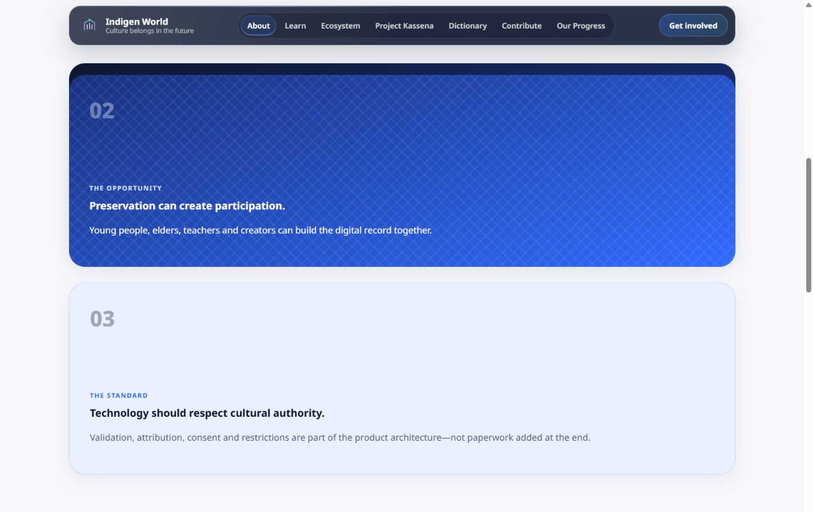
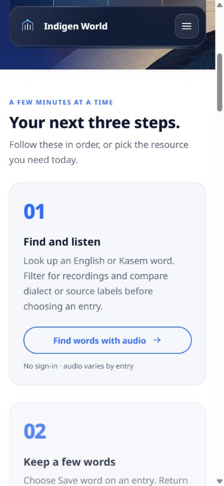
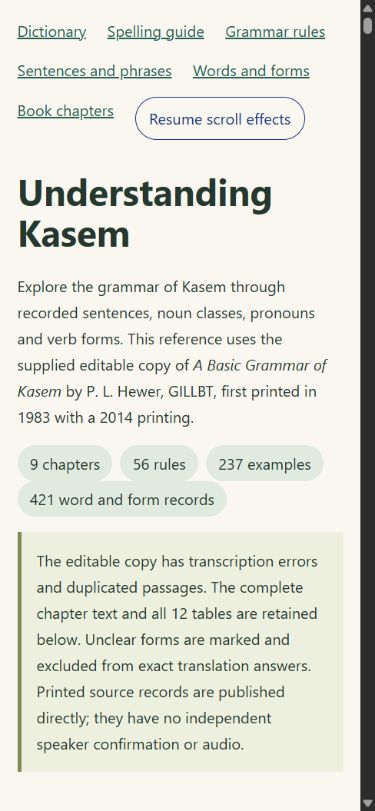

The rising cards introduced on the Indigen World homepage now have a shared home across the public website. They help visitors move through a page one idea at a time, from the mission and products to learning resources, participation and policies.
Availability: This update was deployed and verified on October 12, 2026. Explore the cards across the public pages at indigenworld.com.
Cards rise gently into view as you scroll. Editorial sequences on About, Learn, Ecosystem, Project Kassena, Governance, Get Involved and Terms can layer on larger screens. Dictionary results, published expressions, community cards, contact information and Labs cards use the entrance effect within their existing layouts.

On phones and short screens, cards stay in a normal vertical sequence. A card that is too tall for the available screen also stays in normal flow. Links and form fields remain part of the usual keyboard order.

Use Pause scroll effects in the website footer, or the existing page animation control. The choice is remembered on this browser. Reduced-motion preferences keep content visible without animated entrances. Keyboard focus reveals an upcoming card immediately.
The public spelling and grammar guides use the same motion preference and offer their own pause control. Their source wording, references, tables and search filters stay intact.

This is a presentation update to the public website. It does not announce new dictionary records, a change to contribution review, or a new release of the mobile app, TribeStudio or Admin.